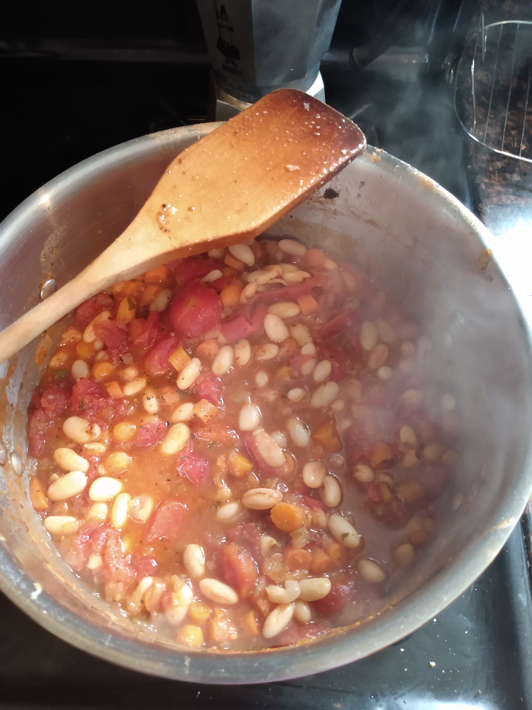

Hearty, Satisfying White Bean Stew

Description
This dish is an evolution of the Italian classic pasta fagioli (pronunced fa-zool). Growing up, my
mom would prepare us this dish as a cheap, satisfying meal when times were tough. It was a rustic dish, consisting of
simply tomatoes, onions, and cannelini beans, eaten over pasta. As I've grown as a chef, I've put my own spin on the dish,
leading to what I believe is an elevated dish with layers of flavor that allows the ingredients to really shine.
Ingredients
- 1 rib celery
- 1 large onion
- 1 lb carrots
- 4 cloves garlic (or more, if you're a garlic fiend like me!)
- 2-3 tsbps olive oil
- 1 tsp dried oregano
- 2 tsp dried thyme
- 1 tsp dried basil
- Salt and pepper to taste
- 1/2 cup white wine
- 2 14oz cans stewed tomatoes
- 1 cup chicken or veggie stock
- 3 14oz cans cannelini beans, rinsed and drained
- Optional parmesan cheese
Description
- Finely dice your mirepoix of onions, carrots, and celery, and garlic. One principle of stews is that they're very
forgiving; you don't have to go crazy here getting the finest dice. As with life, things will work out in the end.
- In a large pot over low-medium heat, add in your olive oil, onions, carrots, and celery. Continue cooking for
about 30 minutes, or until the veggies are soft and deeply caramelized. You will need to stir
somewhat frequently to ensure that nothing is burning or sticking to the bottom. I know this seems quite labor-intesive,
and to be frank, it kind of is. But, this is the only labor-intesive phase of the recipe! The rest is mostly unattended.
Moreover, this part is crucial to building up a rich base of flavor for your stew.
- Once your vegetables have caramelized, add the garlic, and cook for about 2 minutes until the flavor comes out.
- Add your herbs and seasonings. Toast for about a minute or so. This steps helps to release the aromas containes in the
herbs.
- Deglaze the pan with the wine. Deglazing refers to gleaning the brown bits, or fond, from the
bottom of the pan. Other crucial step for flavor! Reduce until the wine has mostly evaporated.
- Add your stock, tomaotoes, and beans. At this point, depending on the salitness of your stock, you may need
some additional salt. Tomatoes and cannelini beans can be quite bland if left unseasoned.
- Simmer for 20-30 minutes, or until the flavors have had a chance to get to know each other and the stew has
thickened to your liking.
- That's it! Either eat as-is, or serve over pasta. My favorite pasta shape for this are mini-shells, because they
sort of "catch" the beans and pieces of the mirepoix.
Conclusion
Wasn't that easy? This recipe shows how, with a little love and care, you can turn humble ingredients into a satsifying,
rib-sticking stew. Hope you enjoy!